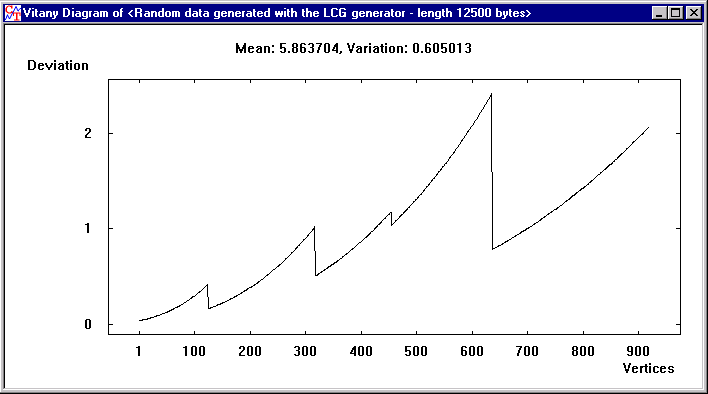

The Vitányi analysis is based on a publication by Paul Vitányi, Ming Li and Tao Jiang ("Kolmogorov Complexity and a Triangle Problem of the Heilbronn Type").
Here the characters of the current document are interpreted as the co-ordinates of points in a unit square. These are randomly linked to triangles whose surface area is then considered. For uniformly distributed, independent (i.e. also cryptographically interesting) sets of points, the expected value for the smallest triangle is roughly proportional to the number of points to the third power.
The Vitányi analysis is only executable for binary file input.
The diagram shows the proportionality constant as a function of the number of points. It is standardized to the mean (mean = 1.0). The mean and the standard variation are also output.
It is to be expected:
Example:
Via the linear congruence generator (LCG parameter: a = 23, b = 0, Modul N = 100001) there were 12.500 "random" characters generated. The Vitányi analysis outputs the following diagram:
